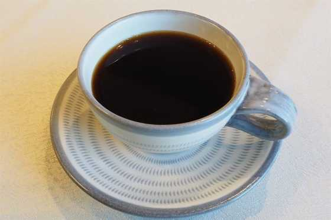
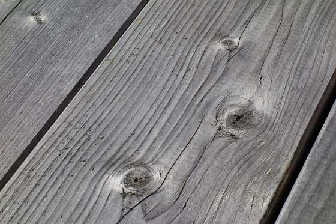
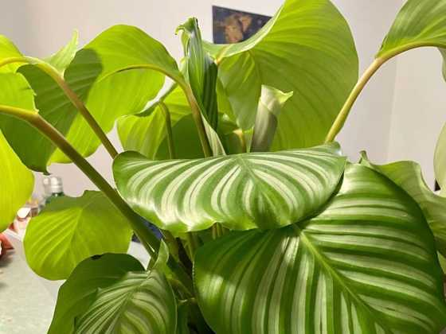
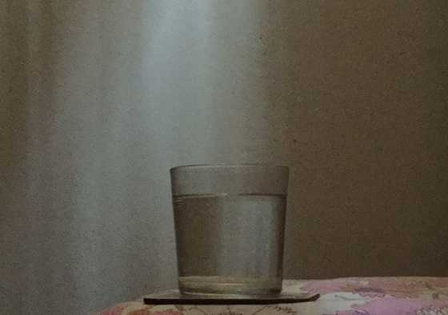
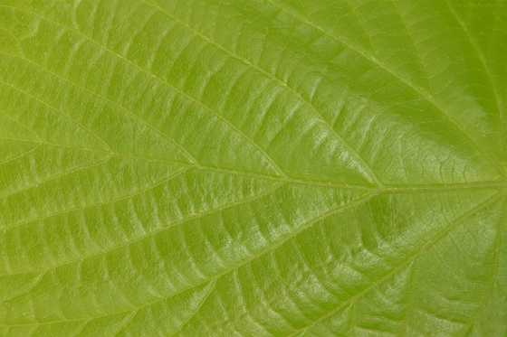

喫茶 ホトリ
川のほとりで、ほっと一息。
お店について
忙しい毎日に、ほっと一息つける喫茶店
喫茶 ホトリは、京丹後市久美浜町の川のほとりにひっそりと佇む、小さな喫茶店です。Instagramでは「忙しい毎日に、ほっと一息つける喫茶店」「珈琲とシフォン、季節の楽しみと人とのつながりを届けます」と紹介されています。2025年1月ごろに久美浜でオープンしたと、地元の宿のブログで紹介されています。店の前には駐車場があります。
情報源: Instagram / Guest house こばま荘のブログ / Yahoo!マップ
店名「ホトリ」の由来は確認できていません。このページの見出しの言い回しは制作側の表現です。



口コミ
お客様の声(イメージ例)
以下は、サイト上での見せ方を示すための創作です。実在のお客様の声ではありません。
イメージ例
川の近くで、静かに過ごせる場所でした。シフォンケーキと珈琲でひと息つけました。
イメージ例
仕事の合間に立ち寄りました。ゆっくりした時間が流れていて、気持ちが落ち着きます。
イメージ例
小さなお店で、窓の外の景色を眺めながらのんびりできました。また行きたいです。
アクセス
お店のご案内
| 店名 | 喫茶 ホトリ |
|---|---|
| 住所 | 〒629-3410 京都府京丹後市久美浜町109 |
| 電話 | 準備中 |
| 営業時間 | 準備中(情報源により異なるため、Instagramでご確認ください) |
| 定休日 | 準備中 |
| @kissa_hotori |
